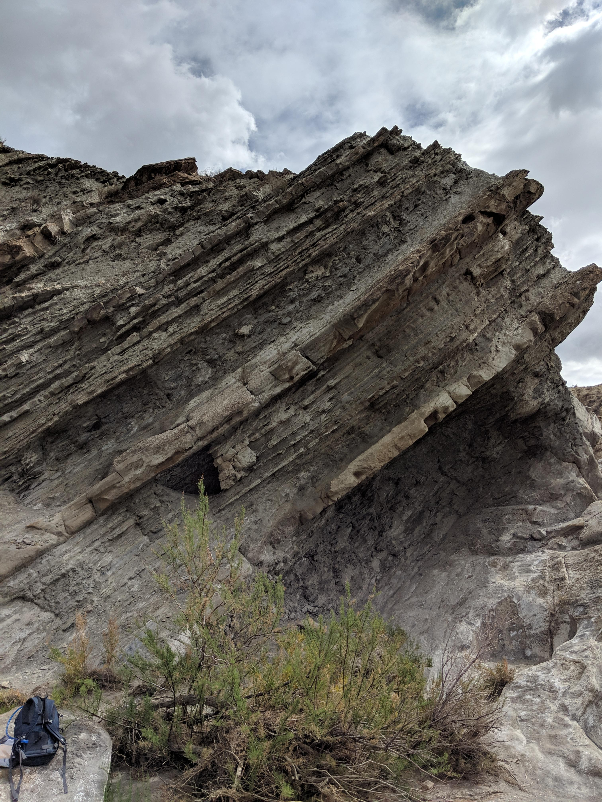

Modelling interpretation uncertainty with the Dirichlet distribution
code
statistics
geology
Author
Nicholas Dorsch
Published
July 7, 2025

A well preserved Bouma sequence from Tabernas Basin, Spain. link
Introduction
The image above depicts a Bouma sequence, which to the untrained eye, is… some tilted mud. To the trained eye however, it is a dead giveaway that the sediment was deposited by a series of dramatic submarine landslides, on the steep continental shelf of a convergent tectonic margin.
It is not a river, says the trained eye, it is not a delta, it is not a lake. It is a turbidite.
The photo above isn’t mine, but I was lucky enough to go to this outcrop years ago during my studies, and the banner image for this blog is actually a deformed turbidite sequence in the same formation of the same basin, an outcrop called el Gordo.
My favourite aspect of studying geology was field work. I found it exciting that so much information about a depositional system could be derived from outcrop and core scale observations. It is a peculiar thing to make such strong inferences about systems that existed millions of years in the past, that we can never verify, and it’s inevitable that arguments over the true interpretation will occur.
Bayesians don’t argue about the truth, though—they just agree to share it around to the best candidates.
So don’t argue, allocate.
Coming at this from a bayesian perspective then, it seems like there should be a framework for reasoning about our uncertainty over geological interpretations. This article is me thinking about that.
The Dirichlet Distribution
The Dirichlet distribution can be used to model the probability of a set of discrete possibilities—depositional environments, in this context. The Dirichlet distribution can generates samples from a “unit simplex” (a vector of numbers that add to 1), which makes it well suited for modelling our uncertainty over interpretations, where we allocate some probability to each.
It also has the convenient property of conjugacy, which essentially means it is very easy to mathematically update as new evidence comes in.
Applied to a Simple Example
Say we are considering three depositional environments when looking at part of an outcrop:
Delta
Turbidite
Lake
The \(\alpha\) parameter of the distribution can be thought of as a list of weights or “pseudocounts”, one for each possibility.
In this case let’s say we assign our weights as:
\[
\alpha = [20, 10, 2]
\]
This equates to us saying that we think the Delta interpretation is most plausible, although the Turbidite interpretation is a possibility, while the Lake interpretation is implausible.
This is the distribution over the probabilities of each of the interpretations. Maybe it seems weird to have a probability distribution over probabilities, but this is actually very common in bayesian statistics. I’ll probably write a post on that at some point, but see the Aleatoric and epistemic section of this wiki page for a primer.
Incorporating Prior Information
Let’s say despite our observations at this outcrop, we have strong indications nearby that we are standing in the middle of a lake deposit. Maybe the outcrop is an anomaly in an otherwise fairly confident interpretation.
If we encode that prior as \(\alpha_{\text{prior}} = [1, 1, 50]\), it looks like this:
We can incorporate this prior information very easily in our \(\alpha\) parameter by just… adding it! It seems like a dumb trick, but this is an analytical result for updating Dirichlet distributions in what’s called a Dirichlet Multinomial conjugate model. If we are comfortable treating our vector of \(\alpha\) values as “pseudocounts”, then the math checks out here.
Now, the strong prior on the Lake interpretation pushes it ahead, but notice the other interpretations are still on the table as possibilities, given the evidence observed at the outcrop.
In my view this provides a pretty strong baseline. We have 3 important things:
The ability to encode prior beliefs over interpretations,
The ability to “score” interpretations based on their likelihoods under those interpretations, and
The ability to update probabilities objectively.
This all hinges on a point-scoring system that makes logical sense, but it seems like a good start.
Point Scoring
The way I’m conceptualizing the points involved in this process is that each field observation has an associated \(\alpha\) score which indicates the support it provides to each interpretation in the vector.
For example, observing a perfect Bouma sequence—like that shown in the first image—is extremely strong evidence that a deposit is turbiditic. That might lead one to associate it with an \(\alpha\) vector of \([1, 100, 1]\) in favour of the Turbidite interpretation.
I mean look at it! Don’t even argue! It’s so obvious!
Other observations would be more ambiguous and open to argument—but that’s why we’re assigning probabilities, not certainties—to the possible observations on the table.
To get started with scoring, I asked Claude for a list of observations and their associated \(\alpha\) scores under the 3 interpretations:
Code
# Create dataframe of sedimentological observations with alpha values# Alpha values represent strength of evidence for each depositional environment# Higher alpha = stronger evidence for that environmentobservations_data = {'observation': ['trough_cross_stratification','planar_cross_stratification', 'ripple_lamination','massive_sandstone','mud_drapes','climbing_ripples','convolute_bedding','flame_structures','load_casts','graded_bedding','flute_casts','groove_casts','mudstone_clasts','plant_debris','bioturbation','varved_lamination','dropstones','shell_fragments','coal_seams','root_traces','channel_lag_deposits','fining_upward_sequences','coarsening_upward_sequences','hummocky_cross_stratification','parallel_lamination' ],# Alpha values for Delta environment'Delta': [15, # trough_cross_stratification - very common in distributary channels12, # planar_cross_stratification - common in delta front8, # ripple_lamination - moderate evidence6, # massive_sandstone - can occur but not diagnostic10, # mud_drapes - good evidence for tidal influence5, # climbing_ripples - possible but not typical3, # convolute_bedding - rare4, # flame_structures - uncommon4, # load_casts - uncommon2, # graded_bedding - rare in delta1, # flute_casts - very rare2, # groove_casts - rare8, # mudstone_clasts - common in channels12, # plant_debris - very common6, # bioturbation - moderate3, # varved_lamination - uncommon1, # dropstones - very rare7, # shell_fragments - moderate evidence15, # coal_seams - very strong evidence14, # root_traces - very strong evidence18, # channel_lag_deposits - extremely strong16, # fining_upward_sequences - very strong13, # coarsening_upward_sequences - strong4, # hummocky_cross_stratification - rare8# parallel_lamination - moderate ],# Alpha values for Turbidite environment 'Turbidite': [3, # trough_cross_stratification - uncommon4, # planar_cross_stratification - uncommon6, # ripple_lamination - moderate in Tc division8, # massive_sandstone - common in Ta division2, # mud_drapes - rare7, # climbing_ripples - moderate evidence12, # convolute_bedding - very common15, # flame_structures - very strong evidence14, # load_casts - very strong evidence18, # graded_bedding - extremely diagnostic16, # flute_casts - very strong evidence13, # groove_casts - strong evidence11, # mudstone_clasts - common at base3, # plant_debris - uncommon2, # bioturbation - rare due to rapid deposition1, # varved_lamination - very rare1, # dropstones - very rare4, # shell_fragments - uncommon1, # coal_seams - very rare1, # root_traces - very rare5, # channel_lag_deposits - uncommon2, # fining_upward_sequences - rare1, # coarsening_upward_sequences - very rare2, # hummocky_cross_stratification - rare12# parallel_lamination - very common in Ta ],# Alpha values for Lake environment'Lake': [2, # trough_cross_stratification - rare3, # planar_cross_stratification - uncommon8, # ripple_lamination - moderate evidence5, # massive_sandstone - uncommon4, # mud_drapes - uncommon3, # climbing_ripples - uncommon5, # convolute_bedding - moderate3, # flame_structures - uncommon4, # load_casts - uncommon7, # graded_bedding - moderate for storm deposits1, # flute_casts - very rare2, # groove_casts - rare3, # mudstone_clasts - uncommon8, # plant_debris - moderate evidence9, # bioturbation - good evidence16, # varved_lamination - very strong evidence14, # dropstones - very strong for glacial lakes6, # shell_fragments - moderate4, # coal_seams - uncommon5, # root_traces - uncommon in lacustrine2, # channel_lag_deposits - rare3, # fining_upward_sequences - uncommon6, # coarsening_upward_sequences - moderate8, # hummocky_cross_stratification - moderate for storms11# parallel_lamination - strong evidence ]}# Create DataFrameobs_df = pd.DataFrame(observations_data)obs_df
observation
Delta
Turbidite
Lake
0
trough_cross_stratification
15
3
2
1
planar_cross_stratification
12
4
3
2
ripple_lamination
8
6
8
3
massive_sandstone
6
8
5
4
mud_drapes
10
2
4
5
climbing_ripples
5
7
3
6
convolute_bedding
3
12
5
7
flame_structures
4
15
3
8
load_casts
4
14
4
9
graded_bedding
2
18
7
10
flute_casts
1
16
1
11
groove_casts
2
13
2
12
mudstone_clasts
8
11
3
13
plant_debris
12
3
8
14
bioturbation
6
2
9
15
varved_lamination
3
1
16
16
dropstones
1
1
14
17
shell_fragments
7
4
6
18
coal_seams
15
1
4
19
root_traces
14
1
5
20
channel_lag_deposits
18
5
2
21
fining_upward_sequences
16
2
3
22
coarsening_upward_sequences
13
1
6
23
hummocky_cross_stratification
4
2
8
24
parallel_lamination
8
12
11
It looks like a great list to me, but I’m not much of a geologist anymore. In the real world these \(\alpha\) scores would have to be calibrated somehow, whether its through expert option or with some kind of data model.
One caveat, though. The Bouma sequence example points to a big problem in this simple points-scoring approach—it misses the gestalt of combined observations. The Bouma sequence is strongly diagnostic because it is the sequence of multiple ordered observations, which on their own would not be nearly as powerful. I’ll have to think about how to deal with this better, but for now will proceed with the simple point scoring method.
In Action
I don’t have real examples to use, but let’s consider a diligent field geologist’s notes about an outcrop.
Since Claude is already cooking, I’ve used it to dream up example:
FIELD NOTES - Station 15, Muddy Creek Section Date: June 15, 2024 Weather: Overcast, good exposure Geologist: Dr. Sarah Mitchell
INTERVAL: 45.2 - 52.8m (Sandstone Unit C)
DETAILED OBSERVATIONS: Trough cross-stratification: Observed in 7 separate beds, sets 0.3-1.2m thick. Parallel lamination: Very common, counted 12 distinct intervals. Massive sandstone: 3 thick beds (0.8-1.5m), clean, well-sorted. Plant debris: Abundant! Counted 15 fragments/coalified pieces on bedding planes. Ripple lamination: Present in 4 beds, mostly at tops of fining-up sequences. Fining upward sequences: Clear in 5 complete cycles, 2-3m thick each. Channel lag deposits: 2 clear examples at sequence bases, pebble lags. Mud drapes: Rare, only 1 thin example on ripple surface. Bioturbation: Moderate, 6 intervals with Skolithos-type traces.
INTERPRETATION NOTES: This interval screams fluvial-deltaic to me. The trough cross-beds in thick sets, abundant plant material, and those beautiful fining-upward cycles. The channel lags are textbook. Probably distributary channel fill transitioning upward to delta front. Very little marine influence based on lack of mud drapes and bioturbation style.
CONFIDENCE: High - excellent exposure, clear diagnostic features
Claude is… quite good at this.
Wrapping this up into data, we can calculate the posterior \(\alpha\) values using the previous table.
Code
field_observations = {'trough_cross_stratification': 7,'parallel_lamination': 12,'massive_sandstone': 3,'plant_debris': 15,'ripple_lamination': 4,'fining_upward_sequences': 5,'channel_lag_deposits': 2,'mud_drapes': 1,'bioturbation': 6}def calculate_posterior_alphas( obs_df: pd.DataFrame, field_observations: dict[str, int]): alpha_counts = {k: 0for k in obs_df.columns if k !="observation"}for obs, count in field_observations.items(): obs_row = obs_df[obs_df['observation'] == obs]for alpha in alpha_counts.keys(): a = obs_row[alpha].values[0] alpha_counts[alpha] += (a * count)return alpha_countsalpha_dict = calculate_posterior_alphas(obs_df, field_observations)alpha_obs = np.array(list(alpha_dict.values()))
Dr. Mitchell’s remarks were broadly correct, then, though the model only gives about 50% probability to the Delta interpretation.
Incorporating Other Information
In the same way we incorporated priors before, we can use the same procedure to incorporate external sources of information. For example, the geophysicist working on this dataset may have a strong conviction that this is a turbidite deposit based on interpretation of seismic data nearby that connects to this outcrop stratigraphically:
Again, it wouldn’t be easy to calibrate these \(\alpha\) values, because they are encoding subjective beliefs about the strength of evidence under different interpretations. But at least we can say that we have considered the geophysicist’s viewpoint and updated our beliefs accordingly.
Problems
The biggest problems I see with this approach are:
The subjectivity of the \(\alpha\) parameter, in priors and point scoring
The treating of observations in isolation, instead of considering their context and how they interact
The bloody huge table of depositional environments, observations and \(\alpha\) scores that would be required to actually use it
Depositional environments evolve—there should be a way of capturing a changing interpretation through a sedimentary succession
To point 4, I think taking a rolling sum over observational data could work here. If the field geologist tabulates observations and their depths, that data could be used to generate a rolling distribution of interpretations by summing the alphas associated with observations over the rolling window. This would turn the model into a kind of Dirichlet process.
On point 3, it might be practical to generate these tables “ad hoc” based on a limited number of possibilities and observations, rather than have one terrifying master table of \(\alpha\) scores.
On point 2… I think a graph (as in graph theory) of observations and interpretations might work here. It would allow observations to “interact” and add up to more of the sum of their parts, just as observations would in a geologist’s brain.
With something like this, the total \(\alpha\) would be calculated using an algorithm that takes into account both the observation node scores as well as the connection strength between them.
A directed graph would also allow the ability to capture the sequencing of observations. A pattern matching algorithm could find subgraphs that belong to these kind of compound observations and incorporate them into the \(\alpha\) scores. Anyway, this is all just words, I don’t have the solution.
So you see… it’s a simple matter of setting all the alpha scores for every observation, for every depositional environment, all the connections between those observations, and all the edge weights of those connections! Why aren’t people doing this already?
Conclusion
Regardless of some big challenges with implementation, I think this approach shows enough promise that if I was working on these sorts of problems in my day-to-day, I would flesh it out in more detail.
I think LLMs make things that might seem totally impractical now more feasible. Insofar as geological interpretation is an associative language game, LLMs are already far better at it than any human. Insofar as it isn’t, and actually requires a causal model of the systems involved, LLMs probably aren’t there yet, and hopefully never will be (so us humans have something to do in the future). Working together, an LLM agent that can reason about these observations and access the model to run the numbers could create a collaborative expert system for geologists to use that would have been science fiction just a few years ago.
I should point out that this process is applicable outside of geology. It can be applied to any argument over discrete hypotheses—you just associate the points people make in support of the options with numbers and then update the distribution over them accordingly. It’s essentially a pros and cons list for nerds. So, next time you’re in an heated political argument at the dinner table, politely request an \(\alpha\) vector from your conversation partners and allocate probabilities. I’m sure it will work out great. The future is so bright!
I might follow this up with another post if some more ideas hit me.